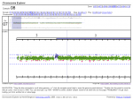
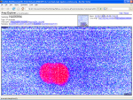
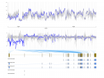
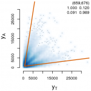

News and recent updates:
- Feb 24, 2016: future 0.12.0 released - introducing cross-platform multiprocess processing.
- Feb 5, 2016: PSCBS 0.61.0 released.
- Jan 20, 2016: future 0.11.0 released - now with parallel processing also on Windows machines.
- Jan 11, 2016: The Aroma Project turns 10 years!
- Jan 10, 2016: aroma.affymetrix 3.0.0 released. Now with parallel processing.
- Nov 17, 2015: PSCBS 0.60.0 released - now with parallel processing.
- Oct 28, 2015: aroma.cn 1.6.1 released.
An open-source R framework for your microarray analysis
   
The aroma.affymetrix package is an R package for analyzing small to extremely large Affymetrix data sets. It allows you to analyze any number of arrays of various chip types, e.g. 10,000s of expression arrays, SNP chips, exon arrays and so on.
Here are some of the features of aroma.affymetrix:
- Number of arrays: unlimited.
- System requirements: As low as 1 GiB RAM, any operating system.
- Parallel processing: Single setting to process data on multiple cores, in the background on multiple R sessions on the local machine, on a computer cluster etc.
- Chip types: all Affymetrix chip types with a CDF, e.g. gene expression, exon, SNP & CN, tiling arrays.
- Immediate support for custom CDFs, e.g. Brainarray, GeneAnnot and Wageningen University-NuGO.
- File formats: Works directly with CEL and CDF files (all versions; text/ASCII, binary/XDA, binary/Calvin).
- Export to/Import from: Bioconductor, CNAG, CNAT & dChip.
- Pre-processing: Background correction, allelic cross-talk calibration, quantile normalization, nucleotide-position normalization etc.
- Probe-level modeling: RMA (log-additive), MBEI (multiplicative), affine (multiplicative with or without offset), ACNE (non-negative matrix factorization).
- Post-processing: PCR fragment-length and/or GC-content normalization.
- Paired & non-paired copy-number analysis: All generations, including 10K, 100K, 500K, 5.0, 6.0, and CytoScanHD. Estimation of full-resolution (raw) copy numbers using CRMA (10K-500K) and CRMAv2 (10K-CytoScanHD). Combine data from multiple chip types. Segmentation methods such as CBS, GLAD and HaarSeg.
- Genotyping: CRLMM (100K & 500K).
- Alternative splicing: FIRMA.
- Dynamic HTML reports: ArrayExplorer & ChromosomeExplorer.
- Persistent memory: Final and intermediate results and estimates are stored on the file system.
- Robustness: Analysis picks up where last interrupted. Only complete files are produced (even during power failures).
- Reproducibility: Near perfect replication of RMA, GCRMA and SNPRMA (normalization & summarization) as implemented in the affyPLM, affy, gcrma and oligo packages, as well as CRLMM (genotyping) of oligo.
- Portable scripts: All data sets and data files are referred to by their names - not by pathnames.
- Design goals: usability, quality & extendibility.